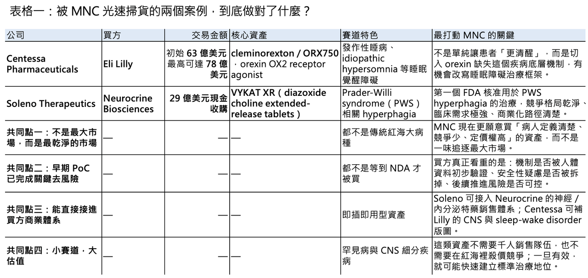
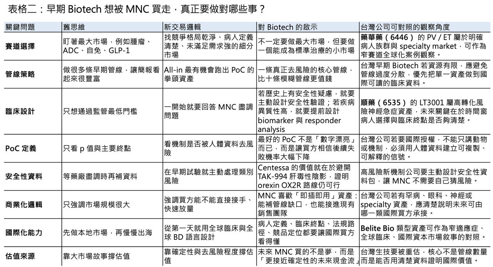

📌 醫藥產業的併購邏輯，正在發生一場非常明顯的結構性變化。
分享這篇分析
把這篇文章轉給關注生技醫藥、公司研究或資本市場的朋友。
過去幾年，許多 Biotech 都想往最大、最熱門、最容易被資本市場理解的賽道擠：腫瘤、ADC、自體免疫、GLP-1、雙抗、細胞治療。這些方向當然仍然重要，但問題也很現實：當所有人都擠進同一條路，原本的藍海很快就變成紅海。

到了 2026 年，跨國藥廠的買法開始變得更精準，也更冷酷。
它們不再只是追逐「最大市場」，而是開始尋找那些競爭格局乾淨、臨床需求極明確、剛剛完成關鍵 PoC 去風險化的細分資產。這些公司不一定有龐大的管線，也不一定站在最熱的靶點上，但只要數據夠乾淨、機制夠清楚、買方能立即放進自己的商業體系裡，就可能被光速買走。
2026 年第一季的兩筆交易，幾乎把這個趨勢講得一清二楚。
Eli Lilly 以初始 63 億美元、最高可達 78 億美元收購 Centessa Pharmaceuticals，核心資產是針對睡眠覺醒障礙的 cleminorexton（formerly ORX750），一款 orexin OX2 receptor agonist。Neurocrine Biosciences 則以 29 億美元現金收購 Soleno Therapeutics，取得 VYKAT XR（diazoxide choline extended-release tablets），也就是第一款 FDA 核准用於 Prader-Willi syndrome（PWS）相關 hyperphagia 的藥物。這兩筆交易，一筆押中睡眠醫學，一筆押中罕見內分泌疾病；都不是傳統意義上最熱的賽道，卻都賣出了讓市場側目的價格。

01｜2026 年 Q1 的異常繁榮，真正釋放的是「精準掃貨」訊號
🔍 從表面看，2026 年第一季的醫藥併購很熱鬧；但如果把交易拆開看，會發現一個非常有趣的現象：真正被高價掃走的，未必是最熱門的泛腫瘤資產，也不是同質化嚴重的 me-too ADC，而是那些長期被低估、但一旦成功就具有高定價權與低商業摩擦的細分疾病資產。
Centessa 的故事是典型例子。
它的核心不是再做一個 CNS 對症藥，而是切入 orexin pathway。Orexin 是調控睡眠與清醒的重要神經胜肽；在 narcolepsy type 1 中，患者的 orexin 神經元缺失或功能不足，導致白天無法維持清醒、猝倒與嚴重生活功能受損。傳統治療多半是在「把人撐醒」，例如 stimulant 或 wake-promoting agents；但 orexin OX2 receptor agonist 的邏輯不同，它更接近補回疾病本身缺失的清醒訊號。這就是為什麼 Lilly 願意用大筆現金買下 Centessa：它買的不只是睡眠藥，而是可能重新定義 narcolepsy 與 idiopathic hypersomnia 治療框架的機制平台。Lilly 官方也明確指出，Centessa 的 cleminorexton 已在 Phase 2a 中展現 potential best-in-class profile，並且其後續 OX2R agonist pipeline 也被納入交易價值。
Soleno 則是另一種模型。
VYKAT XR（diazoxide choline）瞄準的是 Prader-Willi syndrome 的 hyperphagia。PWS 是一種罕見遺傳疾病，患者會出現難以控制的強烈飢餓感，進而導致肥胖、代謝併發症、行為問題與家庭照護壓力。2025 年 3 月，FDA 核准 VYKAT XR，成為第一個針對 PWS hyperphagia 的核准治療。這不是一般慢病市場的邏輯，而是典型 orphan disease 模型：病人數相對有限，但臨床需求極端明確、診療中心相對集中、定價權較高、商業化團隊不需要龐大規模。Soleno 2025 年上市後 9 個月即創造約 1.9 億美元營收，這讓 Neurocrine 看到的不是一個小眾藥，而是一個可快速接入其神經與內分泌特藥商業系統的罕病資產。
這兩筆交易共同說明一件事：MNC 正在重新定義什麼叫好資產。
過去大家以為好資產必須面對大市場；現在看來，真正的好資產，是能在清楚疾病、清楚病人、清楚終點、清楚商業路徑中快速完成去風險化。

02｜為什麼小眾與罕見，反而成了大爆款？
過去很多 Biotech 死在一個錯覺裡：以為市場越大，估值越高。
問題是，大市場通常也意味著競爭更激烈、臨床終點更模糊、支付方更嚴格、商業化成本更重。尤其在腫瘤與自免這些超級紅海，MNC 自己手上已經有大量管線，外部資產若沒有極強 differentiation，很難讓買方真的下重手。
罕見病與特定 CNS 細分疾病的優勢，反而在這裡浮現。
💡 第一，它們的競爭格局乾淨。
像 PWS hyperphagia，在 VYKAT XR 之前沒有核准特效藥。這代表一旦臨床與監管路徑打通，產品就不是在和十幾個同類藥物爭市場，而是在建立第一個治療標準。這種資產對買方很有吸引力，因為它不需要用大型促銷戰去搶份額，而是直接面對一個長期未被滿足的臨床需求。
💡 第二，它們的商業模型很輕。
罕見疾病患者通常集中在少數專科中心、病友組織與專家網絡之中。這類產品不需要數千人的銷售隊伍，也不需要像大眾慢病一樣在基層市場鋪天蓋地推廣。對 Neurocrine 這類已有神經與內分泌特藥商業能力的公司來說，買 Soleno 不是從零建立新體系，而是把 VYKAT XR 放進一個已經存在的 specialty infrastructure 裡。
💡 第三，它們的定價與支付邏輯不同。
罕見病如果有明確療效、明確未滿足需求與可量化臨床效益，通常能取得相對高的價格與較強的支付談判位置。Reuters 報導 VYKAT XR 的核准時也提到，其年治療費用高昂，但因為是 PWS hyperphagia 首個獲批治療，仍具備非常清楚的商業化理由。
這正是現在 MNC 喜歡的模型：市場不用最大，但必須乾淨；病人不用最多，但必須清楚；機制不用最熱門，但必須能被驗證。
03｜真正讓 MNC 無法拒絕的 PoC，不是「漂亮」，而是「去風險」
🧪 賽道選對，只是入場券。真正讓 MNC 願意掏出幾十億美元的，是一份能讓買方相信風險已經被大幅拆掉的 PoC 資料。
這裡的重點不是療效 headline 有多誇張，而是那份資料是否回答了買方最怕的問題。
【Centessa：在歷史陰影裡交出安全性答案】
Orexin agonist 不是第一次被看好。Takeda 的 TAK-994 曾經被寄予厚望，但後來因為肝毒性問題中止開發，讓整個 orexin agonist 賽道一度被打上安全性問號。對睡眠障礙這類非致命性疾病來說，安全性容忍度極低；如果一款藥能讓人清醒，卻可能造成嚴重肝臟風險，那商業價值幾乎會被歸零。
Centessa 的 cleminorexton 做對的地方，不只是顯示促清醒效果，而是在早期臨床中主動回應了整個類別最核心的安全疑慮。公司公布的 Phase 1 資料顯示，ORX750 在 sleep-deprived healthy volunteers 中能顯著增加 wakefulness；後續 Phase 2a 又進一步在 narcolepsy type 1、narcolepsy type 2 與 idiopathic hypersomnia 中建立潛在 best-in-class profile。對 Lilly 而言，這代表一件事：orexin pathway 的有效性不是問題，真正要買的是一個能避開 TAK-994 陰影、且有機會成為同類最佳的安全與選擇性設計。
在 CNS 領域，這種「乾淨」非常值錢。
因為 CNS 藥物最大的風險常常不是沒有藥理活性，而是副作用、耐受性、精神神經安全性或長期用藥風險。當一個小分子在早期就能把買方最怕的 class risk 降下來，交易窗口就會突然打開。
【Soleno：失敗後還能證明有效，反而更有說服力】
Soleno 的故事更像一場臨床韌性的逆轉。
DCCR（diazoxide choline extended-release）在最核心的 DESTINY PWS 試驗中，初次主要分析其實沒有達到主要終點。原因之一，是 COVID-19 疫情期間患者生活模式被嚴重干擾，影響 hyperphagia questionnaire 的評估。然而 Soleno 沒有直接放棄，而是透過 pre-COVID analysis、嚴重 hyperphagia 亞組分析、open-label extension 與 randomized withdrawal study，不斷累積長期資料，證明 DCCR 對 hyperphagia、body composition 與 clinician-reported outcomes 的作用並不是統計偶然。後續文獻也指出，雖然主要分析未顯著，但 pre-COVID 與 severe baseline hyperphagia 族群出現明確改善，且 body composition 與臨床評估指標同樣支持藥物活性。
這是非常重要的 BD 啟示。
一個資產如果從頭到尾順風順水，當然好；但更能讓買方信服的，有時是它曾經被極端環境考驗過，最後仍能用長期資料與更細緻的臨床洞察把有效性重新建立起來。Neurocrine 買 Soleno，不只是買一顆已核准的藥，也是在買一套被監管壓力與現實世界干擾反覆測試過的資料包。
這種資產，對 MNC 來說很珍貴。因為它不是只在理想條件下漂亮，而是在不完美的臨床環境裡仍然站住了。
04｜買方焦慮：專利懸崖下，MNC 要的是「即插即用」
⚙️ 這波併購潮的另一個底層推力，是大型藥廠頭上的專利懸崖。
從 2028 年到 2030 年，許多重磅藥物將陸續面臨專利與競爭壓力。對 MNC 來說，自己從頭做研發已經來不及；等到資產進入 NDA 或上市前夕再買，價格又太貴，甚至早就被競爭對手搶走。因此，剛拿到高品質 I/II 期 PoC 的資產，變成非常理想的收購標的：風險已經初步降低，但估值還沒有完全反映上市後價值；買方接手後，可以用自己的臨床、法規與商業能力把它推進最後幾步。
這就是 Centessa 與 Soleno 的共同點。
Lilly 買 Centessa，不只是買 narcolepsy，而是買進一個能補強 neuroscience 與 sleep-wake disorder 版圖的 orexin franchise。Lilly 已經是代謝領域的全球霸主，但若要避免公司敘事過度集中在 GLP-1，它需要在 CNS、免疫、腫瘤等領域建立下一批成長引擎。Centessa 的 cleminorexton 與 OX2R pipeline，剛好提供一個可被快速放進 Lilly 全球臨床與商業體系的高價值入口。Reuters 也指出，這筆交易是 Lilly 近年最大收購之一，目的正是擴張睡眠障礙與神經科學布局。
Neurocrine 買 Soleno，則是更典型的即插即用。
Neurocrine 已有 Ingrezza（valbenazine）與 Crenessity（crinecerfont）這類中樞神經與內分泌特藥經驗，VYKAT XR 的病人、醫師與中心雖然不同，但商業化邏輯高度接近。Reuters 報導也提到，VYKAT XR 2025 年上市後表現強勁，且分析師預估其未來可能達到 blockbuster 潛力。這對 Neurocrine 來說，不是跨界冒險，而是把既有 specialty infrastructure 變得更有槓桿。
所以，MNC 現在買資產，看的不只是臨床資料，也看三件事：能不能補上公司戰略缺口？能不能直接接進現有商業體系？能不能在專利懸崖前後形成新的收入曲線？
能同時回答這三題的資產，就有機會賣得很貴。
05｜給 early-stage Biotech 的啟示：不要再用大而散的管線圖感動自己
這波交易對全球 early-stage Biotech 的最大啟示，是非常殘酷的：買方不在乎你有幾條半成熟管線，只在乎你有沒有一條足夠尖銳、足夠清楚、足夠去風險化的核心資產。
🎯 第一，停止平庸多元化。
很多公司喜歡在簡報上放 8 條、10 條管線，從腫瘤到自免，從代謝到 CNS，看起來很豐富。但對 MNC 來說，這通常不是加分，而是資源分散的警訊。在現在的市場環境裡，最該做的不是讓自己看起來什麼都有，而是把錢、時間與團隊注意力集中在最有機會跑出 PoC 的那一條。只要一個資產完成真正的機制去風險，公司就可能被重新定價；十條模糊管線，只會讓現金燒得更快。
🎯 第二，臨床設計要從第一天就為 BD 服務。
這不是說臨床試驗不為監管服務，而是說早期臨床必須同時回答買方盡調最想問的問題。如果你的靶點曾出現肝毒性歷史，就必須在 Phase 1 裡主動設計足夠嚴謹的肝臟安全性監測；如果你的疾病異質性很高，就必須提前放入 biomarker、亞組與 responder analysis；如果你的價值在長期用藥，就不能只拿短期指標敷衍。真正聰明的 Biotech，不是等 MNC 來問問題，而是在資料包裡提前把問題回答掉。
🎯 第三，尋找全球視野下的生態位。
不要只看身邊大家在做什麼。當所有人都在同一個 ADC 靶點、同一條自免 cytokine 路徑或同一種 GLP-1 變體上擠成一團時，真正有可能賣出高價的，反而是那些少數人願意深挖的細分市場：罕見神經疾病、罕見代謝病、特定 sleep-wake disorders、特殊受體激動劑、first-in-class 但病人定義清楚的小適應症。只要這些疾病的臨床需求真實、商業模型乾淨、PoC 足夠清楚，它們未必比大市場差，甚至更容易被買走。
06｜台灣可以聯想到誰？不是硬套，而是看「窄賽道、清楚數據、全球化能力」
這篇文章放回台灣市場，不適合硬找「Centessa 概念股」或「Soleno 概念股」。台灣沒有完全對應的上市櫃公司。但如果看的是底層邏輯，也就是窄賽道、清楚病人、國際臨床、可被 MNC 理解的資料包，有幾家公司值得放在旁邊參考。
🌏 第一個是藥華藥（6446）。
藥華藥的 Besremi（ropeginterferon alfa-2b）瞄準的是 polycythemia vera（PV）這類骨髓增生性腫瘤，本質上也是一個相對小眾、但疾病定義清楚、商業化可全球化的 specialty market。Besremi 已獲 FDA 核准用於 PV，並持續往 essential thrombocythemia（ET）等適應症延伸。它和 Soleno 的相似點，不在疾病本身，而在商業模型：不是追最大市場，而是在明確疾病族群裡建立高價值標準治療。
🌏 第二個可以觀察 Belite Bio / 仁新醫藥 相關體系，雖然其主要掛牌與資本市場敘事並不完全等同一般台股標的。其 tinlarebant 瞄準 Stargardt disease type 1 與 geographic atrophy 這類退化性視網膜疾病，同樣屬於患者定義清楚、全球臨床路徑明確、MNC 容易理解的罕見／特殊眼科資產。Belite Bio 近期已啟動向美國 FDA 滾動提交 NDA，這類公司也很符合「窄適應症、全球化開發、資料導向估值」的典型框架。
這裡不是在做投資推薦，而是說一個趨勢：台灣生技若想走向國際，最有機會被重估的，不會是管線很多、故事很散的公司，而是那些能把單一核心資產做到全球病人、全球臨床、全球監管都看得懂的公司。
【結語｜大不再保證估值，精準才是下一輪交易的密碼】
✨ 2026 年 Q1 的這波併購，最重要的訊號不是市場變熱，而是買方變得更精準。
MNC 不是不買了，而是不想再為模糊的宏大敘事買單。它們願意付高價的，是那些已經用早期資料證明機制、用清楚疾病定義降低商業風險、又能直接放進現有公司體系裡的資產。
Centessa 和 Soleno 做對的事情，並不是它們選了最大市場，而是它們選了最適合自己贏的市場。前者在 orexin pathway 裡重新打開睡眠醫學的 disease biology，後者在 PWS hyperphagia 這個長期沒有核准藥的罕見病裡，用長期資料把一個曾經受挫的資產推到核准與商業化。
未來幾年，真正能被 MNC 光速掃貨的 Biotech，未必是管線最多的公司，而是那些像狙擊手一樣，願意在一個小而清楚的疾病裡，把機制、臨床、biomarker、安全性與商業化路徑一次打穿的公司。
大市場仍然重要。
但在下一輪醫藥併購裡，真正決定估值的，會是兩個字：確定性。
參考資料：
[0]:各公司官網＆公開資料
[1]:
reuters.com
https://www.reuters.com/legal/transactional/eli-lilly-buy-centessa-pharma-63-billion-deal-2026-03-31/
www.reuters.com
[2]:
[3]:
[4]:
reuters.com
https://www.reuters.com/business/healthcare-pharmaceuticals/us-fda-greenlights-first-ever-treatment-rare-metabolic-disorder-2025-03-26/
www.reuters.com
[5]:
Rolling Submission of New Drug ..."
引用本文
若在簡報、報告或社群討論引用，建議附上 Drugnews 原文連結。
Drugnews 編輯部，〈讓大藥廠心動的管線到底做了什麼？〉，Drugnews｜藥時事，2026/05/05，https://drugnews.com.tw/articles/2026-05-05-pharma-pipeline-bd-attraction.html
社群原文
讀完這篇，下一步看
這三篇會優先依主題、標籤與產業脈絡推薦，幫你把同一個問題讀得更完整。

減肥藥還是太強了，禮來 猛健樂 賺爛！
2026 年第一季，Eli Lilly 交出了一份讓整個製藥業都很難忽視的成績單：單季總營收 197.99 億美元，年增 56%；調整後 EPS 達 8.55 美元，大幅優於市場預期。真正撐起這份財報的，仍然是那個已經把全球代謝藥市場打穿的名字：tirzepatide。

一篇文章講通現在的“禮來”併購邏輯
💡 四個月，五筆交易，若把交易上限全部加總，Eli Lilly 在 2026 年前四個月已經丟出超過 187 億美元的併購火力：1 月的 Ventyx Biosciences、2 月的 Orna Therapeutics、3 月的 Centessa Pharmaceuticals、4 月的 Cro…

這些中型 Biotech，正在把「重磅炸彈藥物」從夢想變成現金流
在很長一段時間裡，製藥業的 blockbuster drug，似乎是大型藥廠的專屬勳章。